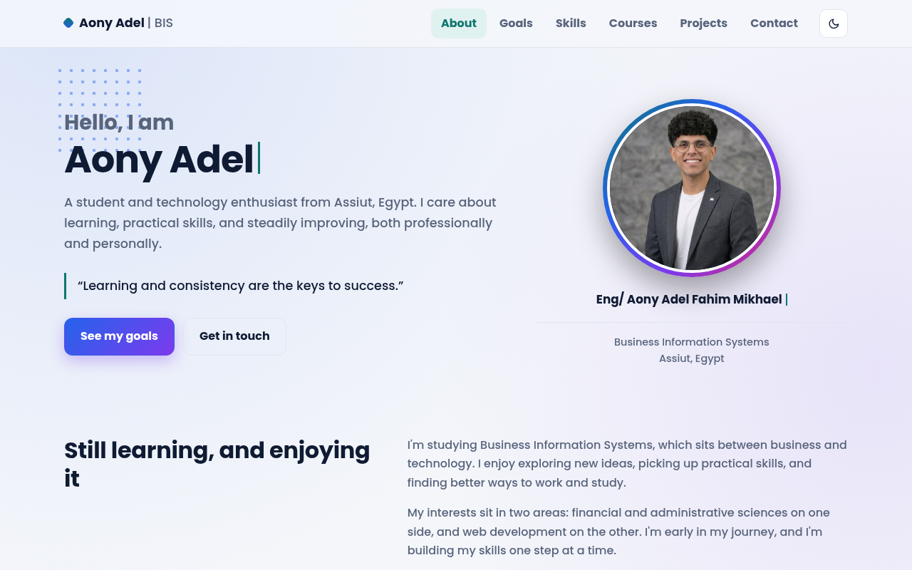

Portfolio previewAony Adel - Personal Portfolio
A personal website showcasing my skills, experience, and software projects, designed to present my professional identity and facilitate communication with clients and recruiters.
HTML5CSS3JavaScript